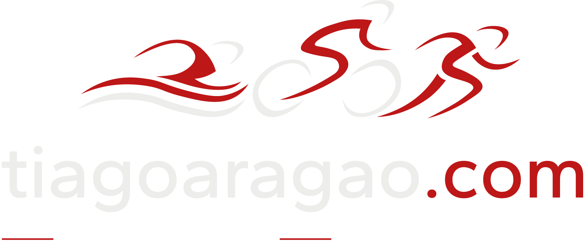
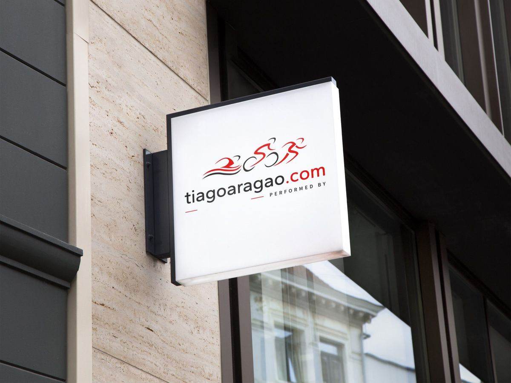
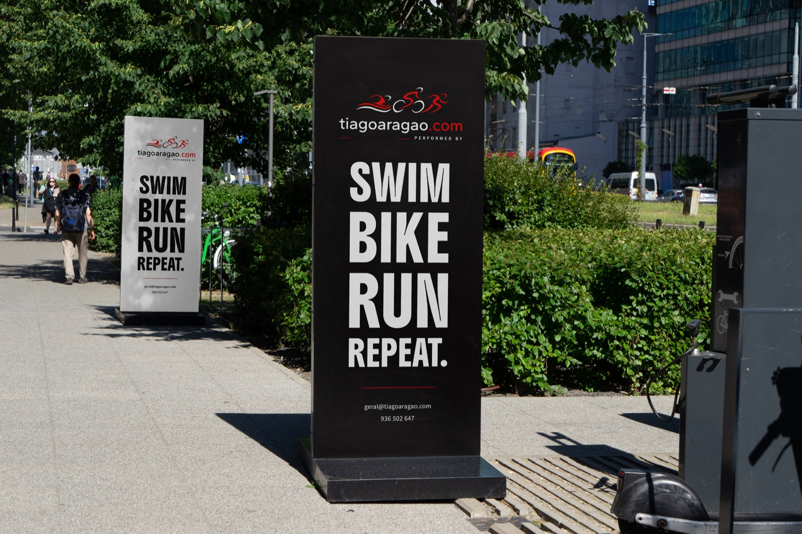
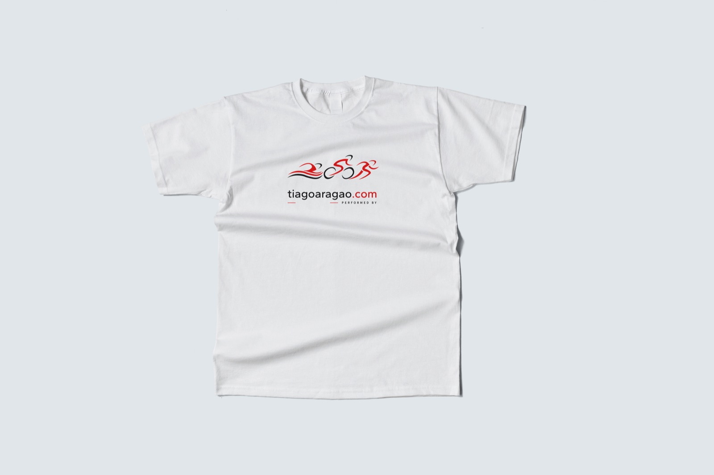
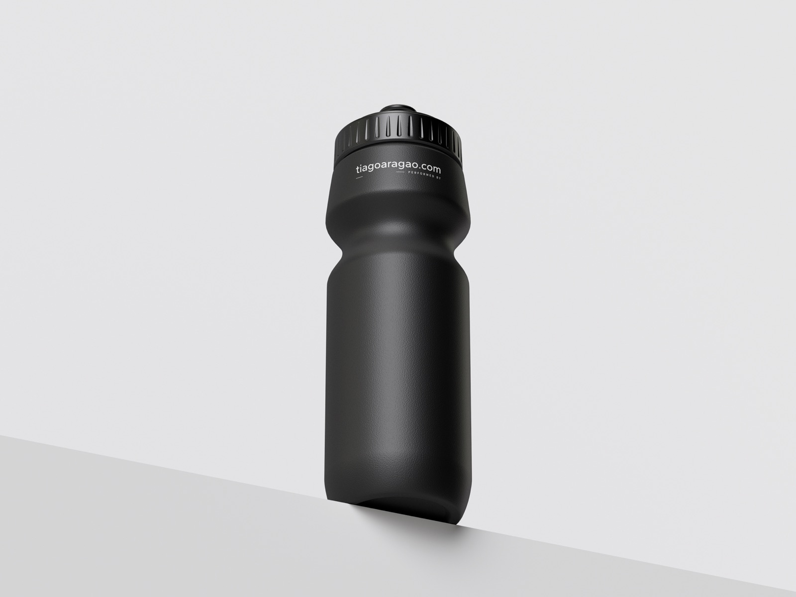
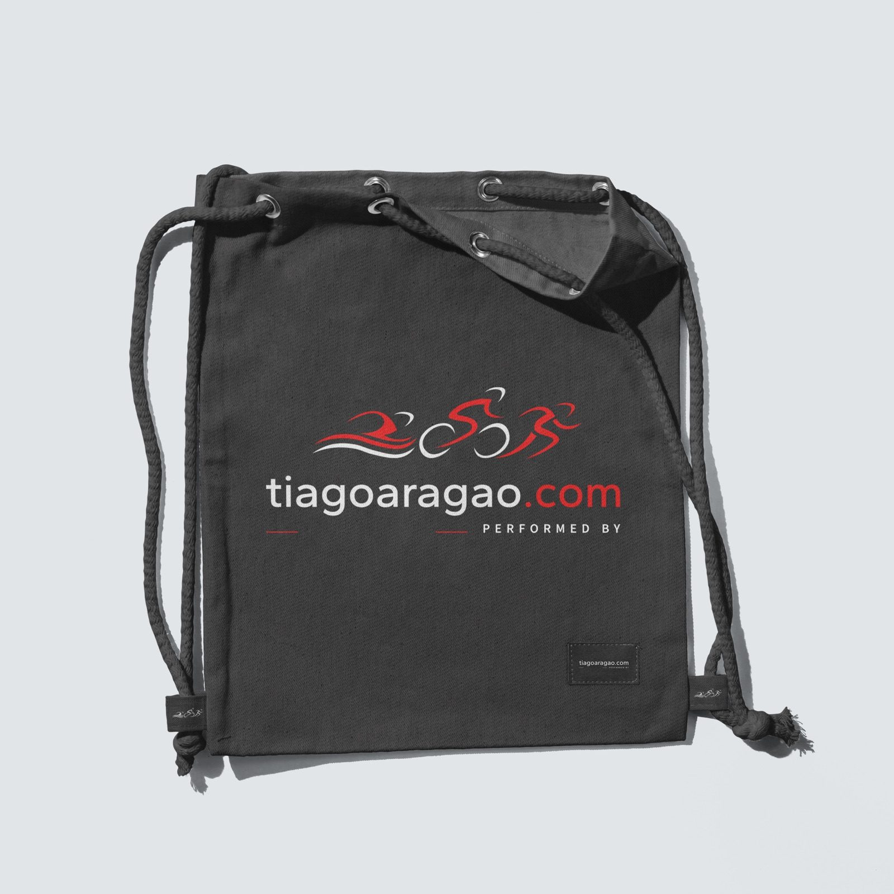
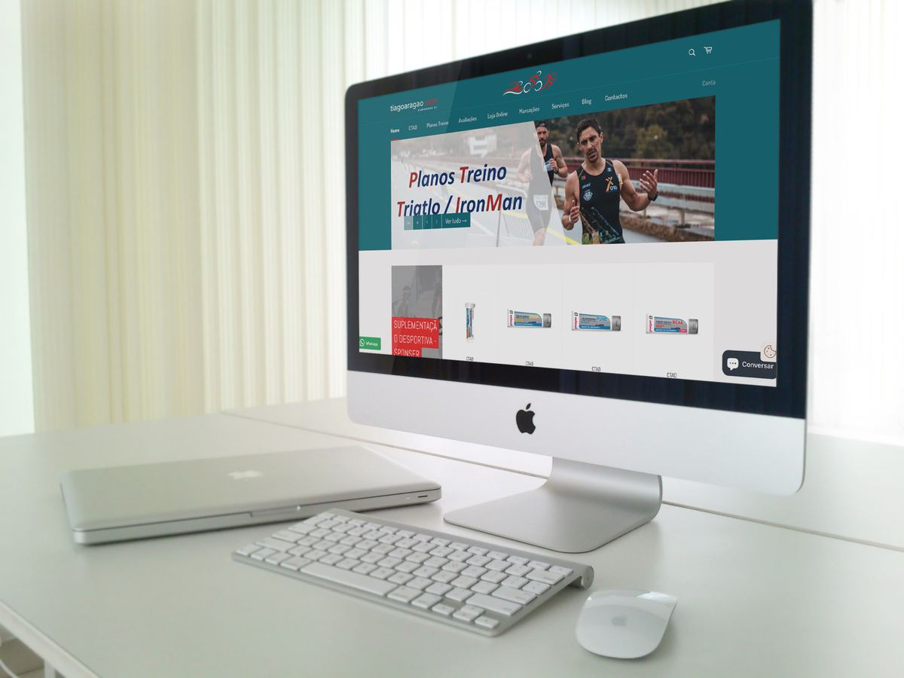
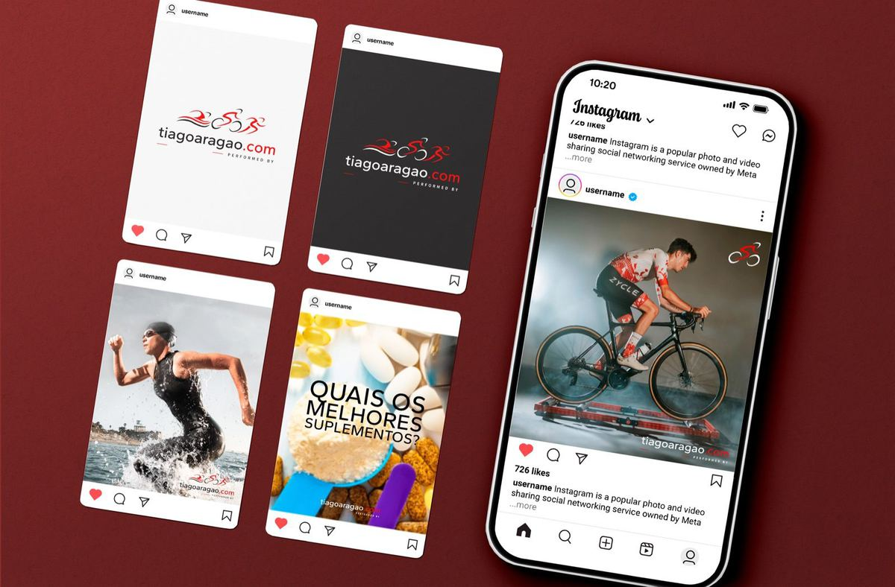

TIAGO ARAGÃO
Projeto Estágio
Rebranding de Identidade Visual
A marca tinha crescido do ciclismo para o triatlo, mas a identidade tinha ficado para trás e já não se aplicava bem fora do digital. Revi o sistema todo, do ícone à paleta, mantendo a assinatura visual que o Tiago já tinha construído e que o público reconhecia.
00 — O DESAFIO
O Desafio
Uma marca pessoal de desporto vive em sítios muito diferentes, uma carrinha, uma t-shirt, um totem à porta, um ecrã de telemóvel. O logótipo original funcionava bem num desses sítios e mal em quase todos os outros. O problema não era estético, era de sistema.

01 — A MARCA
Identidade Visual
Reduzi o ícone ao essencial para aguentar tamanhos pequenos e aplicações monocromáticas, e fixei uma paleta de três cores com contraste suficiente para sinalética exterior. Cada versão do logótipo passou a ter uma utilização definida, em vez de ficar ao critério de quem estivesse a aplicá-la.
02 — APLICAÇÕES
No Terreno


03 — MATERIAIS
No Dia a Dia





04 — RESULTADO
Resultado
A identidade ficou aplicada em frota, sinalética exterior, totem, vestuário, garrafa, saco de treino, website e redes sociais, todos a partir do mesmo sistema.
Design e desenvolvimento feito por Hugo Torres